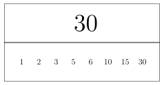
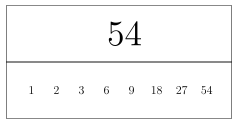
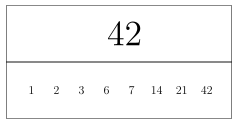
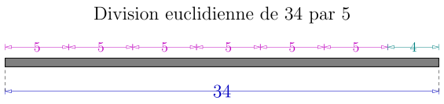
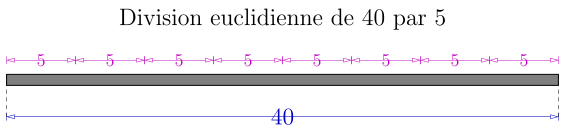
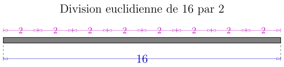
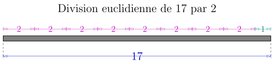
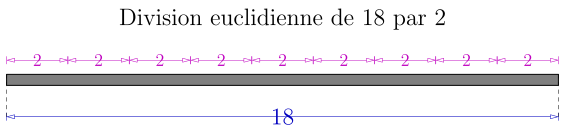
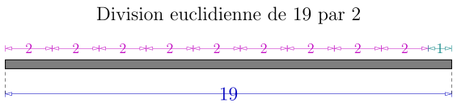

Théorie des nombres
1. Multiples et diviseurs d'un nombre entier.
Soit \(n\) un nombre entier. Alors, on appelle multiple de \(n\) tous les nombres de la forme \(kn=k\times n\) avec \(k\) un nombre entier relatif.
On peut représenter l'ensemble des multiples d'un nombre à l'aide de la représentation ci-dessous.
Ici, vous avez un aperçu des multiples de \(4\).
Peut-on dire que l'ensemble des multiples d'un nombre correspond aux tables de multiplication de ce nombre ?
Combien un nombre admet-il de multiples ?
Seul \(0\) est multiple de tous les nombres entiers.
C'est le seul qui est présent dans toute les «bandes» de nombres qui correspond aux multiples.
Soit \(n\) un nombre entier. Alors un diviseur de \(n\) est un nombre \(d\) tel que \(n\) est un multiple de \(d\).
les diviseurs des nombres dans les bandes du multiples sont présent dans la seconde ligne de la bande. regardez les multilpes de \(23\) par exemple.
On peut lire par exemple que \(-115\) est un multiple de \(-5\) (mais aussi de \(23\)).
On voit donc que le terme multiple et diviseur sont en dualité. L'un est lié à l'autre, et le point de vue est inversé. Il faut prendre le temps d'utiliser ce vocabulaire.
On représentera l'ensemble des diviseurs positifs d'un nombre à l'aide de la boite ci-dessous dans le cours. Par exemple, voici la liste des diviseurs de \(30\).

À partir de la situation \(23 \times 4 = 92\), faites une pharse qui contient le mot :
- «multilpe»
- «diviseur»
(vous ferez donc deux phrases différentes).
L'entier \(1\) est le seul diviseur positif de tous les nombres.
Tout nombre \(n\) peut s'écrire \(n = n \times 1\), donc \(1\) est un diviseur de \(n\).
- Faites la liste des diviseurs de \(25\) (il faut aussi compter les diviseurs négatifs).
- De même pour \(26\).
- Que peut-on dire des nombres qui admettent exactement trois diviseurs positifs ?
Quelle est le nombre minimum de diviseurs que peut admettre un nombre entier ?
2. PGCD, PPCM.
2.1. Plus grand diviseur commun
Soit \(a\) et \(b\) deux nombres entiers positifs. On considère les listes respectives des diviseurs de \(a\) et des diviseurs de \(b\). On définit \(\textrm{pgcd}(a, b)\) par le plus grand diviseurs qui est présent dans la liste des diviseurs de \(a\) et dans la liste des diviseurs de \(b\).
Le plus grand diviseur commun de \(42\) et \(54\) est \(6\), puisque c'est le plus grand nombre commun aux deux listes des diviseurs de \(42\) et \(36\).


2.2. Plus petit commun multiple
Soit \(a\) et \(b\) deux nombres entiers positifs. On considère la bande de multiple (positif), et on définit \(\textrm{ppcm}(a,b)\) par le plus petits multiples commun entre les deux.
Soit \(a\) et \(b\) deux nombres entiers positifs. Montrer alors que \(a\times b\) est un multiple commun de \(a\) et \(b\).
Prenons \(6\) et \(15\), et regardons leur multiple. Peux-tu montrer que \(\textrm{ppcm}(6, 15) = 30\) ?
3. Reste d'une division euclidienne.
Soit \(a > b\) deux nombres entiers naturels positifs.
Alors, il existe un unique couple d'entiers positifs \(q\) et \(r\) tel que
- \(a = bq + r\)
- \(0 \leq r < b\)
Dans la proposition précédente, on appelle \(q\) le quotient et \(r\) le reste de la division euclidienne de \(a\) par \(b\).
Regarde l'image suivante, et explique pourquoi si on prend \(a=34\) et \(b =5\) on obtient \(q=6\) et \(r=4\).
En effet, \(34 = 5 \times 6 + 4\). On dit donc que le reste de la division euclidienne de \(34\) par \(5\) est \(4\).

- Quelle est le reste de la division euclidienne de \(340\) par \(50\) ?
- Quelle est le reste de la division euclidienne de \(134\) par \(5\) ?
- Quelle est le reste de la division euclidienne de \(35\) par \(5\) ?
On suppose que le reste de la division euclidienne de \(a\) par \(b\) vaut \(r=0\). Alors, \(b\) divise \(a\), et réciproquement.
Voici un exemple avec \(a = 40\) et \(b=5\), on voit que le reste est nul, et ainsi on a bien \(5\) qui divise \(40\), ou dit autrement, \(40\) est un multiple de \(5\).

3.1. Division euclidienne par \(2\)
Regarde attentivement ces exemples :




On peut montrer la proposition suivante :
Un nombre est pair si et seulement si le reste de sa division euclidienne par \(2\) vaut \(0\). Si le reste de la division euclidienne d'un nombre par \(2\) vaut \(1\), alors ce nombre est impair, et réciproquement.